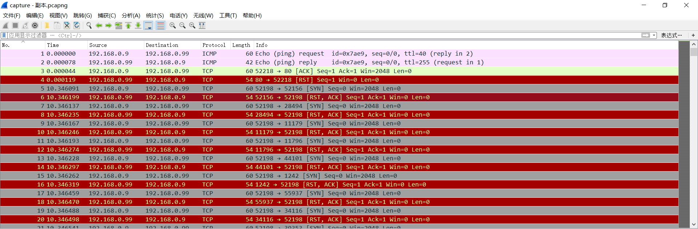
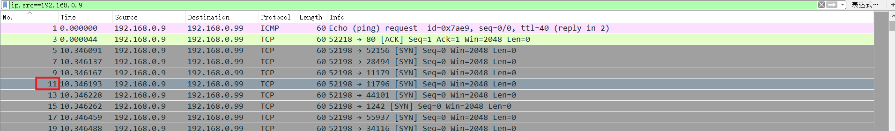
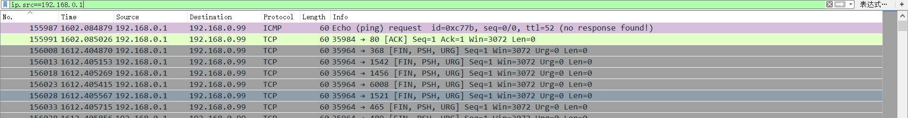
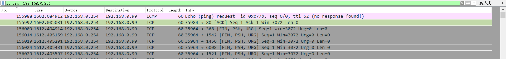
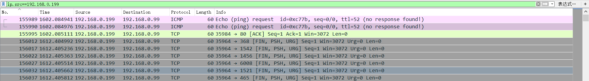

题目描述
有人在内网发起了大量扫描，而且扫描次数不止一次，请你从 capture日志分析一下对方第4次发起扫描是什么时候开始的， 请提交你发现包编号的sha256值(小写)。
解题
下载附件，
题目给的是一个日志文件，但根据题目分析猜测是流量包，改后缀为pcapng，打开：

观察流量包，可以看到有四个IP（192.168.0.9、192.168.0.1、192.168.0.254、192.168.0.199）分别对192.168.0.99进行了SYN扫描，并且大部分是192.168.0.9在扫描。
分析题目，是：
- 第一个ip对目标发起的第四次扫描
- 还是第四个ip对目标发起的第一次扫描
分别对四个IP进行筛选：
192.168.0.9

192.168.0.1

192.168.0.254

192.168.0.199

可以看到只有192.168.0.9对目标发起了四次以上的扫描，
并且每个ip扫描前都对目标进行了ping操作
将第四次扫描的包编号11进行尝试发现不对
所以改变思路将每个ip进行的第一次进行扫描的包编号进行尝试：
最终在192.168.0.199的第一次扫描编号155989尝试成功。
得到flag：PCTF{0be2407512cc2a40bfb570464757fd56cd0a1d33f0bf3824dfed4f0119133c12}